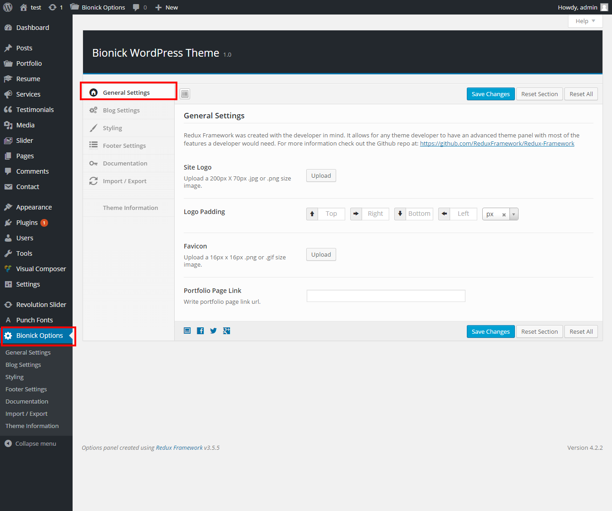
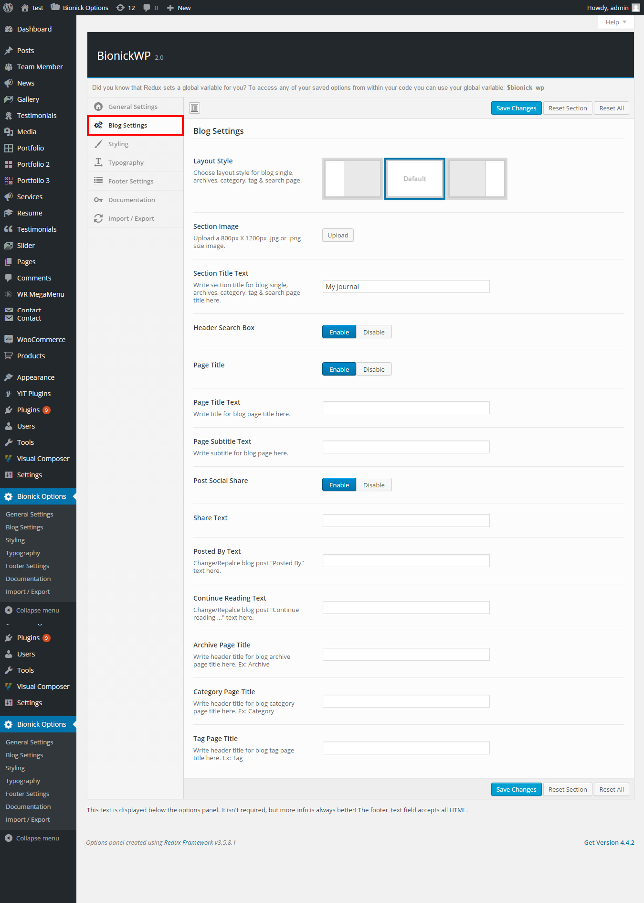
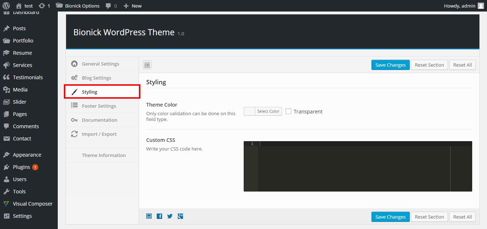
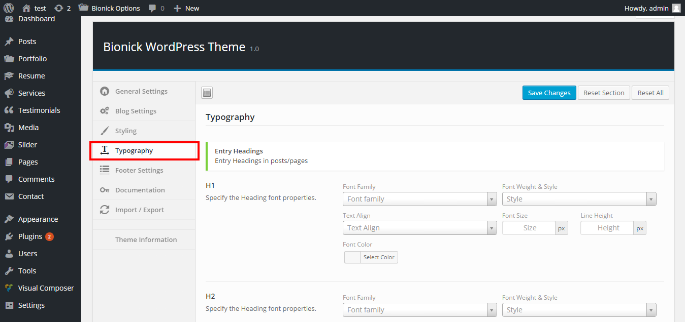
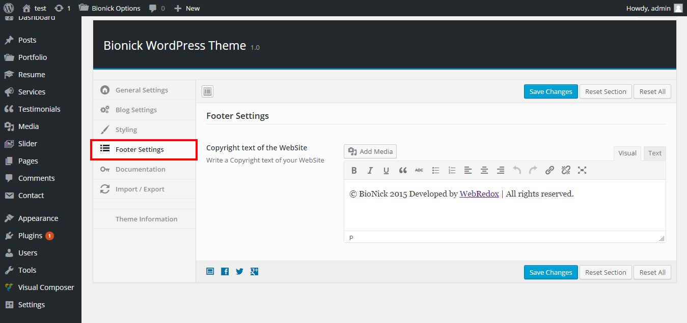

Theme Options
Bionick comes with a theme options panel which allows you to easily customize your website, to access it go to WordPress Dashboard Navigations named by Bionick Options and click Save Changes to save. And click Reset Section to reset changes.

General Settings
- Site Logo: To add site logo image click upload button.
- Logo Padding: To adjust site logo image position by using padding.
- Favicon Upload: To add favion image click upload button.
- Portfolio Page Link: To add portfolio page link which need for portfolio details page.

Blog Settings:
- Layout Style: To choose layout style for blog details, archives, category, tag & search page. Select Default or Right Sidebar or Left Sidebar options
- Section Image: To add section image for blog "Default" layout style click upload.
- Section Title Text: To add section title for blog "Default" layout style write down at this text field.
- Header Search Box: To show/hide header search box at the top of the header for blog details, archives, category, tag & search page. Select Enable or Disable button
- Page Title: To show/hide page at the header for blog details, archives, category, tag & search page. Select Enable or Disable button
- Page Title Text: To add page title for blog details page write down at this text field.
- Page Subtitle Text: To add page subtitle for blog details page write down at this text field.
- Post Social Share: To show/hide post social share icon at blog details page. Select Enable or Disable button
- Share Text: To add share icon text for blog details page write down at this text field.
- Posted By Text: To change/repalce blog post "Posted By" text write down at this text field.
- Continue Reading Text: To change/repalce blog post "Continue reading ..." text write down at this text field.
- Archive Page Title: To change/repalce blog post "Archive" page title text write down at this text field.
- Category Page Title: To change/repalce blog post "Category " page title text write down at this text field.
- Tag Page Title: To change/repalce blog post "Tag " page title text write down at this text field.

Styling:
- Theme Color: Bionick has unlimited color option. To change site theme color select from here.
- Custom CSS: To add/edit CSS code write down the codes at this text area.

Typography:
Bionick has typography option with each property can be called individually.

Footer Settings:
- Copyright text of the WebSite: To add copyright content at the footer area write down at this text area.